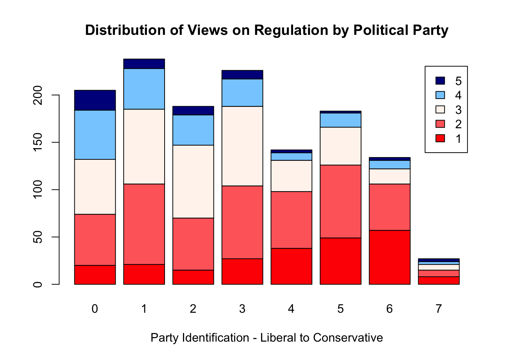
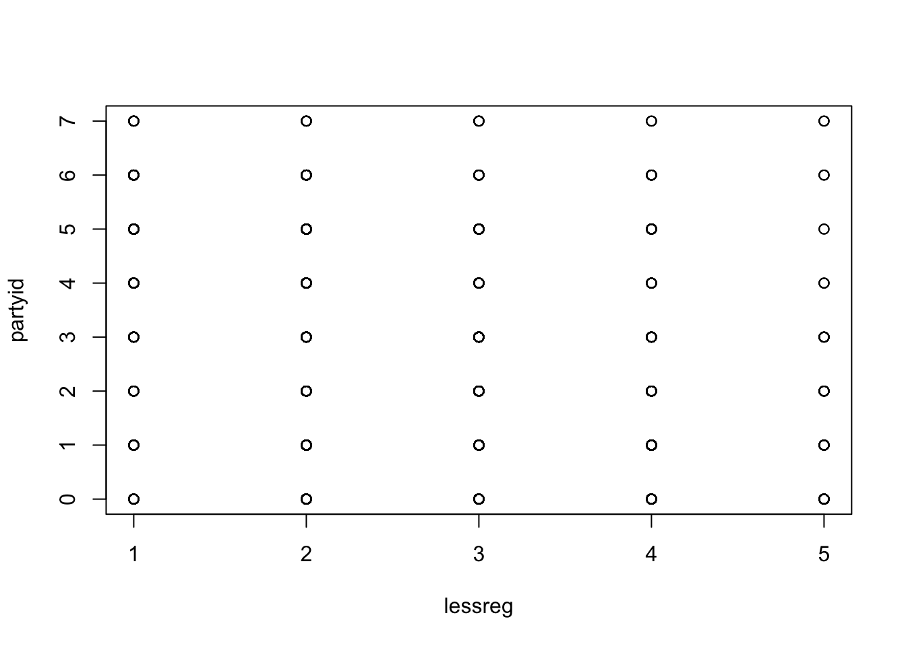

Research Assignment
Introduction
This project seeks to analyse the relationship between political beliefs and views on regulation of business. The conventional association is that more Conservative people tend to be in favour limited government regulation in the free market economy, while Liberals believe in the role of the government in curbing excess and protecting consumers. To investigate this I looked at data from the 2016 General Social Survey, specifically the political identification of people and their views on whether there should be less regulation of business. The 2016 data is espescially useful as it coincided with a Presidential election year. The focus of this election shifted from a focus on the economy to a larger emphasis on social issues, particularly immigration and foreign policy, so it is worthwhile to investigate this issue which received a smaller amount of attention.
My hypothesis was that Liberals would favour more regulation while Conservatives would favour less. The hypothesis for the second independent variable, 2016 income, was that lower incomes would also favour more regulation on business. However, the correlation was expected to be less than that of political party and view on regulation.
Data
The first independent variable is Party ID. This is measured on a scale of 0 to 7 - with 0 the most Liberal and 6 the most Conservative. 0 = Strong Democrat 1 = Not Very Strong Democrat 2 = Independent, Close to Democrat 3 = Independent, (Neither, No Response) 4 = Independent, Close to Republican 5 = Not Very Strong Republican 6 = Strong Republican 7 = Other Party, Refused to Say
table(gss$partyid)##
## 0 1 2 3 4 5 6 7
## 205 238 188 226 142 183 134 27There
The second independent variable is 2016 Income.
table(gss$RINCOM16)##
## 1 2 3 4 5 6 7 8 9 10 11 12 13 14 15 16 17 18 19 20 21 22 23 24 25
## 8 26 23 18 18 13 11 14 26 15 26 22 36 31 49 64 41 65 70 60 36 34 19 12 8
## 26
## 24The distribtion of income was quite well spread out and varied, with the majority of respondents earning less than $50,000 in the last year. The data is not a true interval-ratio variable, and it is important to note that 51 people surveyed reported incomes of over $170,000, and the data does not specify how high their actual income turned out to be. Furthermore, 85 participants declined to provide their annual incomes, which makes this variable incomplete and less
The dependent variable is Support for Less Government Regulation of Business. 1 is strong support for this and 5 is strongly against.
table(gss$lessreg)##
## 1 2 3 4 5
## 236 470 399 191 60There were a total of 1444 respondents, and the larger proportion of people supported some reduction of government regulation. Almost 50% of people surveyed believed that the regulatory regime was too much of a burden for businesses. The single largest group was in favour of regulations, closely followed by the neutral group. Interestingly, the smallest group was that strongly against a reduction in regulation. This group was a third of the size of the next closest - the group moderately against a decrease in regulation. This means that just over 17% of those surveyed would like to see increased government regulation of business. This data appeared at first glance surprising, but it is important to note that views on regulation can vary significantly, for example people frequently support regulation on banks and Wall Street firms, yet ardently oppose regulation on small businesses and so called “Mom and Pop” businesses.
Results
Here is how the distribution of regulatory views related to Party Indentification and 2016 Income:
counts <- table(gss$lessreg, gss$partyid)
barplot(counts, main="Distribution of Views on Regulation", xlab="Views on Regulation")counts <- table(gss$lessreg, gss$RINCOM16)
barplot(counts, main="Distribution of Views on Regulation", xlab="Views on Regulation")
chisq.test(table(gss$partyid, gss$lessreg))## Warning in chisq.test(table(gss$partyid, gss$lessreg)): Chi-squared
## approximation may be incorrect##
## Pearson's Chi-squared test
##
## data: table(gss$partyid, gss$lessreg)
## X-squared = 208.69, df = 28, p-value < 2.2e-16reg1 <- lm(partyid ~ lessreg, data = gss)
summary(reg1)##
## Call:
## lm(formula = partyid ~ lessreg, data = gss)
##
## Residuals:
## <Labelled double>
## Min 1Q Median 3Q Max
## -3.6920 -1.5380 -0.1150 1.4620 5.6161
##
## Labels:
## value label
## 0 STRONG DEMOCRAT
## 1 NOT STR DEMOCRAT
## 2 IND,NEAR DEM
## 3 INDEPENDENT
## 4 IND,NEAR REP
## 5 NOT STR REPUBLICAN
## 6 STRONG REPUBLICAN
## 7 OTHER PARTY
## 8 DK
## 9 NA
##
## Coefficients:
## Estimate Std. Error t value Pr(>|t|)
## (Intercept) 4.26905 0.13431 31.79 <2e-16 ***
## lessreg -0.57702 0.04877 -11.83 <2e-16 ***
## ---
## Signif. codes: 0 '***' 0.001 '**' 0.01 '*' 0.05 '.' 0.1 ' ' 1
##
## Residual standard error: 1.918 on 1341 degrees of freedom
## (1524 observations deleted due to missingness)
## Multiple R-squared: 0.09451, Adjusted R-squared: 0.09384
## F-statistic: 140 on 1 and 1341 DF, p-value: < 2.2e-16plot(partyid ~ lessreg, data = gss)
chisq.test(table(gss$RINCOM16, gss$lessreg))## Warning in chisq.test(table(gss$RINCOM16, gss$lessreg)): Chi-squared
## approximation may be incorrect##
## Pearson's Chi-squared test
##
## data: table(gss$RINCOM16, gss$lessreg)
## X-squared = 95.988, df = 100, p-value = 0.5949reg2 <- lm(RINCOM16 ~ lessreg, data = gss)
summary(reg2)##
## Call:
## lm(formula = RINCOM16 ~ lessreg, data = gss)
##
## Residuals:
## <Labelled double>
## Min 1Q Median 3Q Max
## -14.6473 -3.9262 1.0738 4.4343 11.7949
##
## Labels:
## value label
## 0 IAP
## 1 UNDER $1 000
## 2 $1 000 TO 2 999
## 3 $3 000 TO 3 999
## 4 $4 000 TO 4 999
## 5 $5 000 TO 5 999
## 6 $6 000 TO 6 999
## 7 $7 000 TO 7 999
## 8 $8 000 TO 9 999
## 9 $10000 TO 12499
## 10 $12500 TO 14999
## 11 $15000 TO 17499
## 12 $17500 TO 19999
## 13 $20000 TO 22499
## 14 $22500 TO 24999
## 15 $25000 TO 29999
## 16 $30000 TO 34999
## 17 $35000 TO 39999
## 18 $40000 TO 49999
## 19 $50000 TO 59999
## 20 $60000 TO 74999
## 21 $75000 TO $89999
## 22 $90000 TO $109999
## 23 $110000 TO $129999
## 24 $130000 TO $149999
## 25 $150000 TO $169999
## 26 $170000 OR OVER
## 27 REFUSED
## 98 DK
## 99 NA
##
## Coefficients:
## Estimate Std. Error t value Pr(>|t|)
## (Intercept) 16.0078 0.5931 26.992 <2e-16 ***
## lessreg -0.3605 0.2151 -1.676 0.0941 .
## ---
## Signif. codes: 0 '***' 0.001 '**' 0.01 '*' 0.05 '.' 0.1 ' ' 1
##
## Residual standard error: 6.251 on 767 degrees of freedom
## (2098 observations deleted due to missingness)
## Multiple R-squared: 0.003649, Adjusted R-squared: 0.00235
## F-statistic: 2.809 on 1 and 767 DF, p-value: 0.09414plot(RINCOM16 ~ lessreg, data = gss)
Conclusions
There is a significant correlation between Party ID and Views on Regulation, however the relationship between 2016 Income and Views on Regulation is much weaker. From the Chi Square test, we can make the argument that there is a clear correlation showing that Liberals support more regulation and consumer protection, while Conservatives favour a less burdensome set of laws for businesses. This is in line with the conventional idealogies of each of the two parties in the United States, the Democrats and the Republicans.
Copyright © 2017 Malcolm Palley, Inc. All rights reserved.